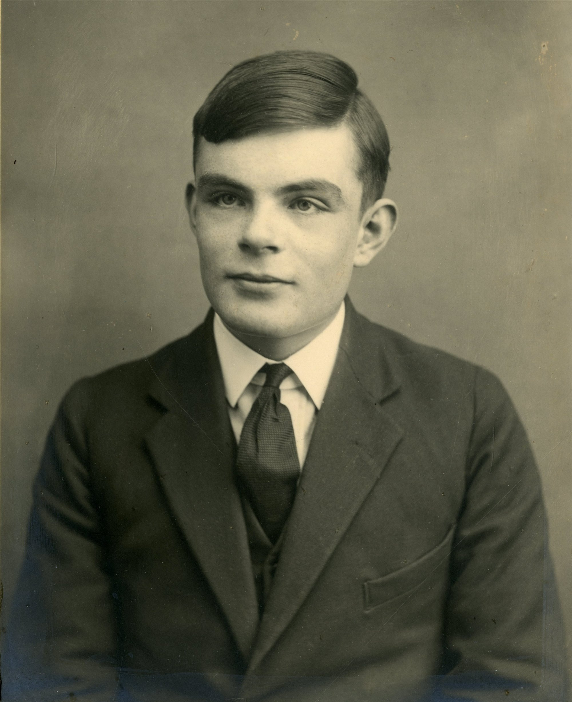

Antecedentes y perspectivas históricas

Alan Turing (1912-1954) fue un matemático británico considerado uno de los padres de la informática moderna y la Inteligencia Artificial.
• Descifró los mensajes Enigma que intercambiaba el ejército nazi gracias a su
máquina Phoenix.
• Definió el Test de Turing (1950), que es un test que permite evaluar el nivel de inteligencia de una máquina en función de sus respuestas, comprobando si estos son indistinguibles de los de un ser humano.
• Definió el concepto de Máquina de Turing, que es un autómata que puede reconocer cualquier lenguaje formal.
El comienzo de todo (antes de 1940)
La Bomba (1940), conocida como Phoenix, era una computadora mecánica de propósito especial que buscaba el configuración de los rotores de la máquina enigma, implementando una cadena de deducciones lógicas para cada posible combinación.
Primera generación (1940 1958)

La válvula termoiónica, válvula de vacío, tubo de vacío o bulbo, es un componente electrónico utilizado para amplificar, conmutar o modificar una señal eléctrica, controlando el movimiento de electrones en un espacio vacío a muy baja presión, o en presencia de ciertos gases.
• La memoria se construyó utilizando tubos de mercurio líquido y tambores magnéticos.
•El almacenamiento interno estaba compuesto por un tambor que giraba rápidamente, en el que se colocaba un dispositivo de lectura/escritura magnético.
• Los programas se cargaban a través de tarjetas perforadas
ENIAC (Electronic Numerical Integrator And Computer) es considerado uno de los primeros ordenadores de propósito general, es decir, dependiendo de la programación que se le aplique, podría realizar una tarea u otra.
Fue construido para calcular las tablas de tiro de artillería de las Naciones Ejército de los Estados Unidos y ocupaba 167 metros cuadrados y pesaba unas 27 toneladas.
Utilizaba tarjetas perforadas para la ejecución de programas.
Alan Turing publicó el libro "Maquinaria informática e inteligencia" (1950). Este libro describe el famoso Test de Turing.
Conferencia de investigación de verano de Dartmouth sobre inteligencia artificial (1956). La Inteligencia Artificial surgió como un área para definir aquellas aplicaciones que intentaban imitar el modelo de razonamiento y comportamiento humano.
1957 Frank Rosenblatt desarrolla "el perceptrón" que se considera la primera red artificial neuronas.
Segunda generación (1959-1964)
El transistor es un dispositivo electrónico semiconductor utilizado para producir una señal de salida en respuesta a una señal de entrada que puede ser amplificada, oscilada, conmutada o rectificada. Puede funcionar como interruptor (Electrónica Digital) ya que permite el paso de corriente entre el colector y el emisor para ser activado o desactivado mediante el uso de una corriente de baja intensidad a través la base (IB) que activa el flujo de corriente entre el colector (IC) y el emisor (IE).
Las computadoras centrales (mainframe o iron) son dispositivos electrónicos centralizados utilizados por grandes organizaciones para aplicaciones críticas como el procesamiento de "Big Data", la planificación de recursos empresariales y las transacciones "a gran escala".
•Sistemas de tiempo compartido a través de recursos centralizados
•Terminales simples para el acceso de los usuarios.
•Interfaces de usuario no amigables.
•Podrían programarse utilizando lenguajes de programación de alto nivel independientemente del hardware.
COBOL (COmmon business Oriented Language, 1959) es considerado el primer lenguaje universal de programación de alto nivel y propósito general de tipo imperativo, ya que fue creado para ser ejecutado en cualquier computadora mediante un compilador.